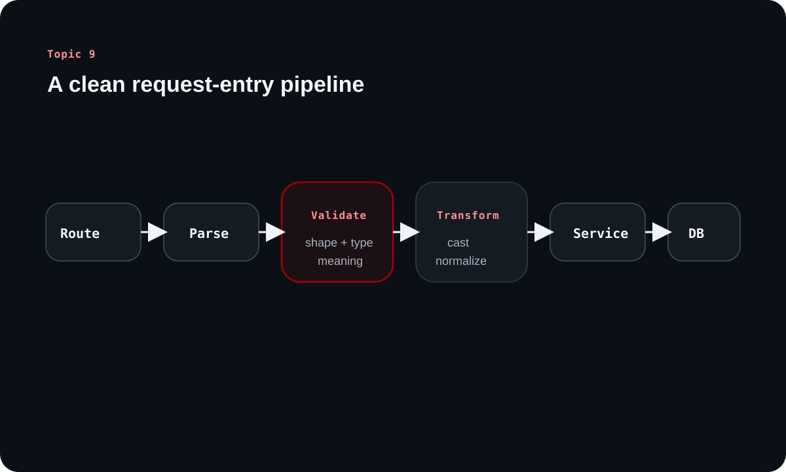

Validations and Transformations for Backend Engineers
Topic 9 focuses on the point where input first enters the backend. The source treats validation and transformation as the gate that protects the rest of the system, and this article turns that idea into a step-by-step mental model beginners can actually use.
Inside this article
Entry pointSyntacticSemanticTypeNormalization400 vs 500Frontend vs backend
The practical rule from the source is simple: validate early, transform deliberately, and never let malformed input become the repository layer's problem.
Chapter 1
Validation belongs near the entry point
The source places validation and transformation immediately after route matching and before business logic execution.
Why the controller boundary is the right place to start
The source frames the controller layer as the HTTP-facing boundary of the backend. That makes it the natural place to inspect request bodies, query parameters, path parameters, and headers before the service layer begins business logic.
This placement preserves separation of concerns. Services can focus on domain rules, while the controller boundary keeps malformed transport input from leaking deeper into the system.
Think of it as a request pipeline
Validation and transformation are easiest to reason about as a pipeline. Route match comes first, then parsing, then structural checks, then logical checks, then normalization, and only after that does the request reach the business layer.
That flow is more than style. It is how a backend stays predictable under messy real-world input.
Learning diagram

The source treats validation and transformation as a gate before business logic, not as cleanup after something has already gone wrong.
Chapter 2
The goal is data integrity, security, and clearer failure modes
The source repeatedly returns to one operational consequence: if bad input gets too far, the system fails in the wrong place.
Early validation prevents deeper system damage
APIs accept input from many clients, not just your own front-end. If malformed data reaches persistence code, it can trigger database errors, broken assumptions, and vague server failures that are hard to explain or recover from.
Validating at the edge means the client gets a precise 400 Bad Request instead of forcing the database or repository layer to become the first line of defense.
Database constraints are important, but they are not the UX layer
The source uses database typing as an example: if a column expects text and the request sends the wrong type, the database will reject the write. That is useful for integrity, but it is a poor user experience if the application only discovers the problem there.
Application-level validation should catch those issues earlier and translate them into messages clients can act on.
Chapter 3
Not all validation checks ask the same question
The source separates validation into three families so backend engineers can reason about them more precisely.
Syntactic, semantic, and type validation
Syntactic validation checks whether data matches a required shape or format. Semantic validation checks whether the value makes sense in the real domain. Type validation checks whether the incoming value has the expected data type.
The power comes from combining them. A field can be structurally valid but semantically absurd, or correctly shaped but of the wrong type for downstream logic.
Validation type
Question it asks
Example
Syntactic
Does the value fit the expected format?
Email format, phone pattern, YYYY-MM-DD date string
Semantic
Does the value make sense in context?
Date of birth is not in the future
Type
Is the value the expected type?
Field is a number, boolean, or array of strings
Real APIs usually need compound rules
The source's examples move from simple presence and length checks into cross-field rules such as matching password confirmation, conditional requirements such as partner data when married is true, and array element checks.
That progression is important for beginners because it shows validation is not only about single fields. Often it is about relationships between fields and the meaning of the entire payload.
Chapter 4
Transformation prepares data for the system's internal shape
Validation says whether input is acceptable. Transformation decides how acceptable input should be normalized before deeper processing.
Normalize once so the rest of the system stays cleaner
The source uses page and limit query parameters to show why transformation matters. Query parameters arrive as strings, but pagination logic expects numbers. Converting once at the boundary avoids repeated casting and repeated uncertainty downstream.
Other examples include lowercasing email addresses, adding missing country codes, and applying default values when a parameter is optional.
Clarified note
Different stacks place this logic in slightly different spots: controller code, dedicated schema validators, or middleware. The important part is that the transformation happens before business logic starts relying on the data.
Chapter 5
Frontend validation helps UX, but backend validation remains the authority
The source ends with an important boundary that newer engineers sometimes underestimate.
Fast feedback belongs in the frontend, final enforcement belongs in the backend
Frontend validation is useful because it gives users fast feedback and can prevent obviously bad submissions. But it is never sufficient for system safety because clients can bypass the UI entirely with tools such as Postman, scripts, or altered requests.
That is why backend validation must remain strict and comprehensive. The backend is the final authority on what the system will accept.
The healthy loop is feedback first, enforcement second
The source recommends a layered approach: let the frontend catch obvious mistakes early, then let the backend re-check everything authoritatively and return precise errors if anything still fails.
That arrangement improves usability without compromising integrity, and it also makes API behavior more dependable for every kind of client.
Overall takeaway
What to remember
Validation and transformation are boundary work. They protect the system by ensuring that bad input fails early, good input is normalized once, and the service layer receives data it can trust. That is why these steps belong near the controller boundary and not deep inside repositories or databases.